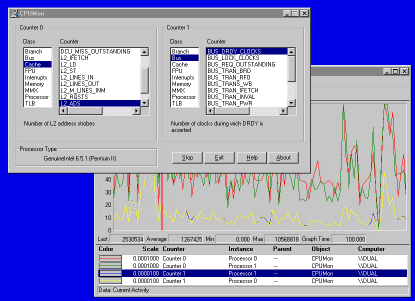

CPUMon is an advanced performance measurement tool. Its combination GUI/device driver make the wide range of processor performance counters present on the Pentium, Pentium Pro and Pentium II/III, easily accessible. You select the two counters you're interested in, enable them via the GUI, and at a later point stop the counters in order to see their values. While a measurement is in progress you can watch the values change with NT's built-in Perfmon.
CPUMon works on NT 4.0 and Win2K.
Note that CPUMon does not work on Pentium 4 CPUs.
Here is a screenshot of CPUMon's counter selection dialog with Perfmon displaying counter values in real-time.
Simply run the CPUMon GUI (cpumon.exe) from the same directory that the driver (cpusys.sys) resides in. Note that it must be located on a non-network drive and that you must have administrative privilege to run CPUMon.
After CPUMon has started you select the two performance counters that you wish to enable. The fact that only two counters can be active at any given time is a limitation of the processors, not CPUMon. Just before you are ready to start the activity you are going to measure, press the Start button. This resets and starts the selected counters. When the measured activity is complete, press the Stop button (the Start button toggles to Stop when pressed). A summary of gathered performance information is presented. This information includes the values of the two counters that were enabled, the number of seconds and cycles that have elapsed, and a variety of NT-related counters, such as context switches and page faults.
Each time you exit CPUMon it remembers the position of the window and the counters you have selected.
When you start CPUMon it automatically registers the processor performance counters with the built-in Windows NT/2K performance collection facility. Thus, standard tools like NT's Perfmon can be used to watch counter values in real-time. Simply start the desired performance tool (e.g. Perfmon) and select the CPUMon object type. CPUMon exposes both processor performance counters, with instances for each processor on your system. You can stop a CPUMon measurement, select new counters, and restart measurement without starting or stopping the display of the CPUMon counters in Perfmon. CPUMon automatically deregisters the processor performance counters when you exit it.
The names and descriptions of the Pentium performance counters were obtained from the Intel Architecture Software Developer's Manual, Volume 3: System Programming Guide, available for free download at the Intel Web site. Note that the Pentium (P5) has different counters than the Pentium Pro (P6) and higher Pentiums (e.g. Pentium II). Certain counters are only available on processors that have MMX support. CPUMon will detect MMX support and make these counters available for selection when appropriate. Also, some counters are only available as counter 0 or 1, while most can be selected as either counter. CPUMon correctly displays this information.